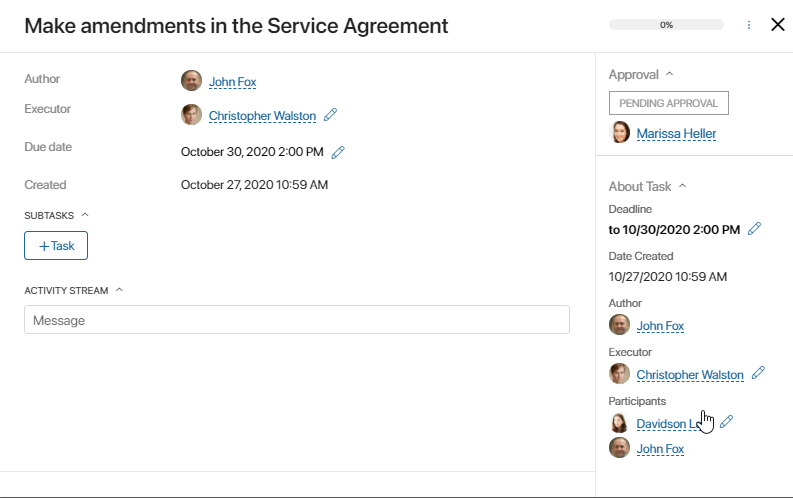
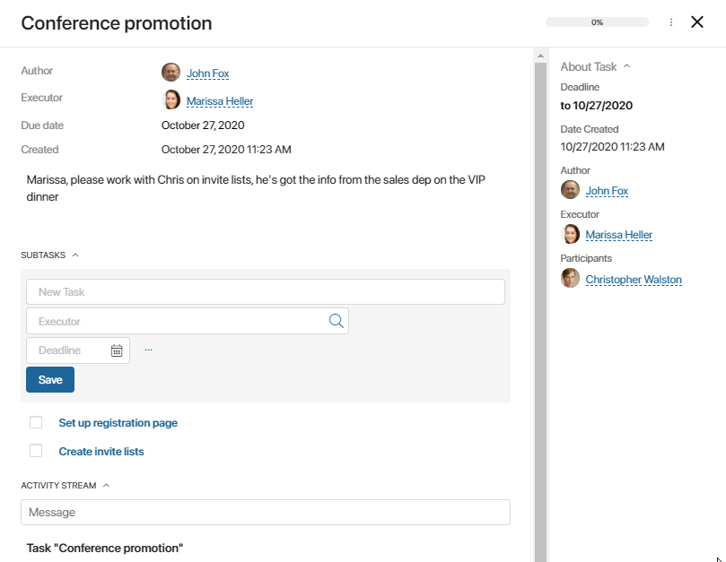
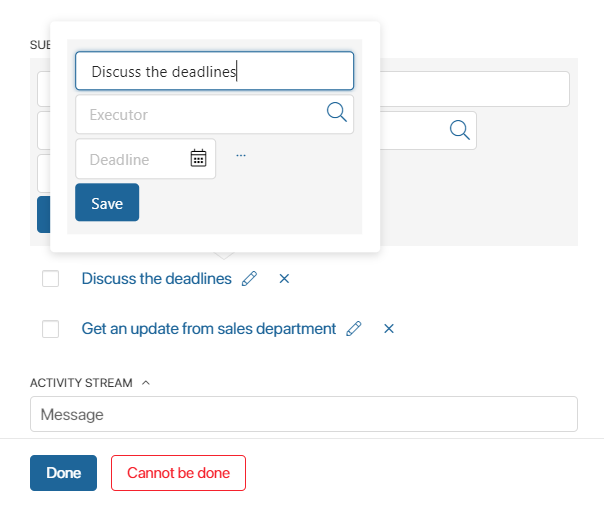

You can create subtasks and checklists for any tasks including the process ones. This is a convenient tool that allows you to break down larger tasks into smaller ones and take everything into account. Use it to plan and track progress.
начало внимание
You can create subtasks and checklists not only for tasks but also for files and app items.
конец внимание
Create a subtask
Employees work with subtasks in the same way as with standard tasks. A subtask has its own deadline, executor, and even subtasks. The number of hierarchical levels is not limited. Each team member can mark their subtasks as completed, while the status of the parent task will not change.
- Depending on where you want to create a new subtask, open:
- The parent task by clicking on its name in My tasks or Assisting. In Assigned by me this option is available only when the task was not assigned in the course of a processes, or you are the process initiator and task executor at once.
- App item view page.
- File.
- Click on the +Task button on the app item or file side panel. If you are creating a subtask on a task page, this button will be displayed in the Subtasks section.
- Specify the name, the executor, and the deadline, and click Save.
If you want to add other participants, give a detailed description of the task, or attach a file, click on the three dots next to the Deadline field. A window with all task settings will open.

The subtask will be created, and the executor will receive a notification in the #Activity stream. On the subtask page, the employee will see a link to the parent task, app item, or file, so they will be able to access the initial data if necessary.
The employee who set the subtask, as well as the author of the parent task, will be able to track the progress of the subtask or interrupt its execution in the Assigned by me section.
начало внимание
When the parent task is closed, all uncompleted subtasks remain active.
конец внимание
Create a checklist
Apart from subtasks, you can create checklists. Checklists are separate items and will not shown in My tasks. You can view them on the page of the parent task, app item, or file.
To add a new checklist item, do the same steps as for creating a subtask, but without specifying the executor and deadline. All you have to do is type in its name and either press Enter or click Save.

To complete an item on the checklist, check the box to the left of the checklist. The completed item is crossed out.
To delete a checklist item, click the X icon on its right and confirm deleting.
You can convert it into a subtask so that it is shown in My tasks. To do that, click the pencil icon on its right. In the window that opens, you can specify the executors and deadlines for the subtask.

When you complete a task with an incomplete checklist, an alert will appear. The author of the task is assigned a control task where they can either close the task without completing the checklist or re-open it.
Found a typo? Select it and press Ctrl+Enter to send us feedback